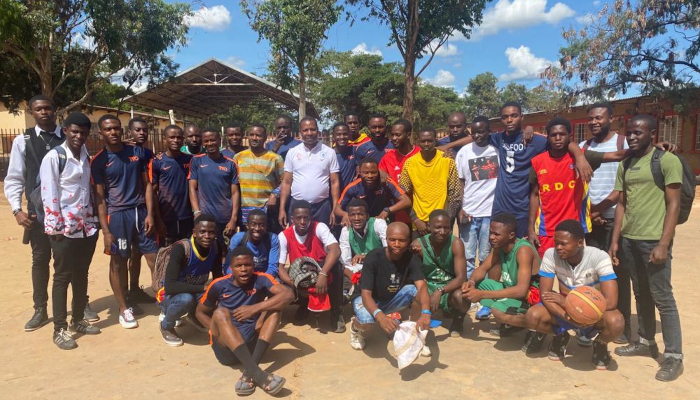

ESIS AUX JEUX SALESIENS, EDITION 2022
Publié le 16/04/2022 (Jabulani !D)
L’École Supérieure d’Informatique Salama aux Jeux Salésiens, édition 2022
Suspendus depuis l’année 2020 suite au confinement subséquent à l’avènement de
la pandémie à Coronavirus, c’est le samedi 26 mars 2022 que les Jeux Salésiens,
activité tant récréative que compétitive pour les étudiants de l’ESIS, a repris
du service. L’ESIS y est représentée cette année par ses équipes masculines de
football et de basketball. Les deux équipes sont accompagnées par Messieurs
Jonathan BAYONGWA et Jonas MUZEMBE, permanents de ESIS.
C’est l’équipe de basketball qui a été la première à entrer en danse dès le jour d’ouverture, contre l’hôte de la compétition, la Cité Des Jeunes. Kheite et ses hommes ont mouillé le maillot pour défendre leur institution, mais ont malheureusement perdu la première rencontre. Cette première confrontation a tout fait, sauf les décourager. La défaite les a plutôt poussés à mieux développer leur jeu. Hugues et ses coéquipiers ont, pour leur part, joué leur premier match de football le dimanche 27 mars, malheureusement perdu aussi.
Avec la bénédiction du Père Jean-Marie, Aumônier de l’ESIS, tout ESIS souhaite bon vent aux deux équipes qui la représentent aux Jeux Salésiens, et attend sereinement les deux trophées, qu’elle brandira avec fierté. Les Jeux Salésiens sont une compétition organisée par les Salésiens de Don Bosco. Ils concernent essentiellement la jeunesse encadrée dans les maisons et institutions gérées par les Salésiens de Don Bosco et les Filles de Marie Auxiliatrice. La compétition regroupe donc les filles d’une part, et les garçons d’autre part. Les Jeux Salésiens couvrent généralement cinq disciplines sportives, à savoir : le football, le basketball, le volleyball et le handball.